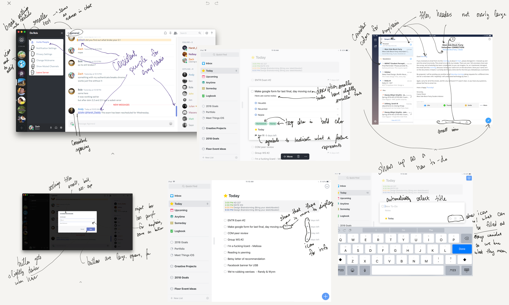
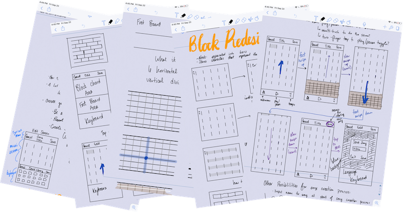
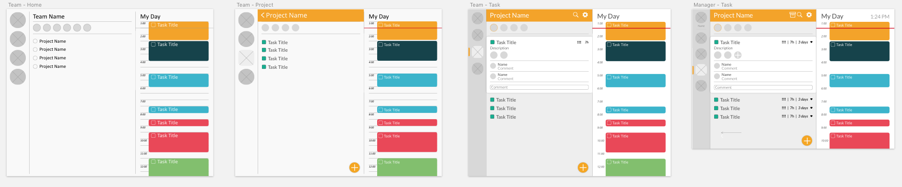
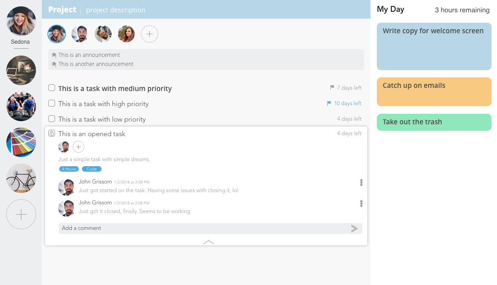

II) Designing the product
Creating a clean, beneficial user experience and interface
Jakob’s Law states that “Users spend most of their time on other sites. This means that users prefer your site to work the same way as all the other sites they already know.” Because of this, I like to start my design process by looking for inspiration. Rather than looking through websites like Dribbble or Behance, where most designs are more creative and experimental than truly beneficial, I look at various popular websites and applications to see how they’ve tackled design problems.
For Amora, I looked predominantly at Things 3, Discord, and Spark. I chose these applications because they’re popular, well designed, and some of the cleanest, well-thought-out applications on the market.

Each excelled at different things: Things 3 is incredibly simplistic to-do application. It incorporates many of our team’s wishes for the task layout, so I took note of the tasks when closed and expanded in that application.
I’ve used Discord regularly for communication and collaboration; it’s how I talk with countless friends, and I use it as a community development tool for my floor community. I think Discord has an incredibly design and user experience, so I took note of its separation of servers and invitation system for inviting people to servers.
I use Spark as my main email client. It successfully simplifies extremely complex and complicated options, actions, and call to actions into an incredibly simple user experience. It follows my team’s mantra of “be a robust application, but assume simplicity.” Because of this, I looked at and took note on how it incorporates these robust features into a simple user experience.
Wireframing
With this inspiration, I set out on the second step of my design process: brainstorming through wireframing. This allowed me to experiment with different layouts and ways to incorporate features quickly and easily, while also keeping my development team in the loop and on the same page.

After the brainstorming, I asked myself the following questions to narrow down which mockup I want:
- What are the user’s behaviors, goals, and expectations when using this app?
- Which of these designs best help us solve the problem of group collaboration pain points?
- How do we differentiate our design while still maintaining usability?
The leftmost bar contains the projects that a user is in. This bar is always present, allowing for simple, easy switching between projects. The next section is specific to the project. It contains the majority of information that a user will work with, and is unique to each project. Listed at the top is the name of the project, along with the setting icons. Directly below are the icons of the collaborators. Listing these at the top shows their importance and allows users to easily differentiate between their projects, while also making the project more personal and engaging; seeing the icons of your team members is a subtle reminder of who you’re working with and the importance of collaboration.
We included an announcements section with each project, and listed it next. We’re currently designing for english-speaking users, so based on the way top-down, right-left style of reading our users are accustomed to, this placement again proves the importance of announcements. They’re unique to each project to keep the separation apparent.
The final portion of this section contains the tasks. By default, they’re listed with a standard checkbox and title on the left, with the importance and number of days remaining on the right. This style reflects what users are used to both in their hand-written todo lists, and in the majority of todo apps. I didn’t want to add any unnecessary complexity to the default task view. Upon clicking a task, however, a user is greeted with more information, such as the exact due date for the task, team members assigned to that task, and comments on that task. We included these features in the expanded task view to help separate work; collaborators for certain tasks are listed at the top of each task for the same reasons that they’re listed at the top of the project; comments allow easy communication on tasks among teammate, while always making them readily accessible and easy to find.
UI Design
With wireframes and use experience decided, I next set out on the user interface design. Just as I asked questions for the experience design, I started this process by asking myself the following:
- What emotion and attitude should Amora have? Playful? Serious? Neutral? Calming?
- How can the UI design help us reach our goal?
- How can the UI design enhance the user experience?
- How can color facilitate user flow, while still remaining accessible for everyone?
To truly be a collaborative tool, I decided that Amora should be serious, but playful; color should be used to differentiate between projects and tasks, but have enough contrast to still be accessible and usable by all users.
The UI design went through 2 iterations. The first incorporated the user experience and user flow exactly as the wireframes specified; to be entirely honest, I basically just added color. It was a rather fast iteration to get my ideas on the UI design and to see if the ideas would work. It allowed me to experiment with colors, and which colors to use, icons, shadows, and more.

After walking away from the design for a night, I returned to reiterate on it. Though my goal was to create a playfully serious application, it looked more like company software from the early 2000s. Colors were harsh and did not complement each other; the text was unnecessarily large and the font was too blocky. I still believed that the experience was beneficial and right, so I focused on ensuring the colors, font, and information hierarchy were lightened. I came to the following design:

To reach my goal, I softened the background greys. Adding blue to their hue made them more calming than serious, while still gradually lightening from darker to lighter helps the eye focus on the most important sections of the application. The project colors were lighted and made to be less saturated. This helped them complement each other rather than battle for the user’s attention. I also chose Lato as my font of choice; it not only is on Google Fonts, which decreasing the website’s load time for users, but it has a wide array of font weights. This allowed me to bold the more important information and lighten the less important.